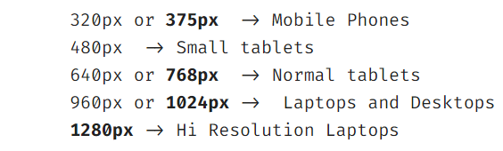

Introduction to Responsive Design
- When we want out website to flow freely across all screen resolutions & sizes.
- A website "respond" according to the screen size.
- Designers generally provide mockups of a website which tell a developer how the website should look on different screens.
- To style elements for the different screen sizes, We use @media
Ground Rules of responsive design
- Use relative units like rem, % in place of absolute units
- Use fluid containers for content as much as you can (i.e flexbox)
- Try not to use fixed width & height, We can use min-width or max-width(counterparts)
- Try to design Mobile First Websites - Mobiles are generally single column. -> Less CSS written.
- Look after these points :
- Start with a small screen, then test on larger devices and see where the design "breaks"
- Use @media queries to define breakpoints of a page.
- We need to use this meta tag to design responsive Websites.li
"<meta name="viewport" content="width=device-width, initial-scale=1.0" >"
Breakpoints
- Breakpoints define the width of different screen sizes on which our website can be viewed.
- Best way to think -> Starting from mobile, the "point" where your design starts to "break"
- Some standard break points are,

- We can conditionally define CSS for different breakpoints
A
A